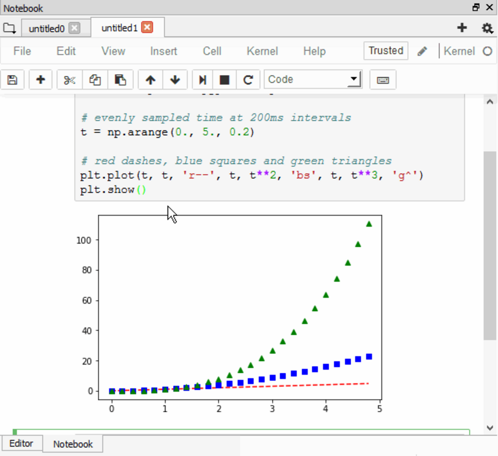
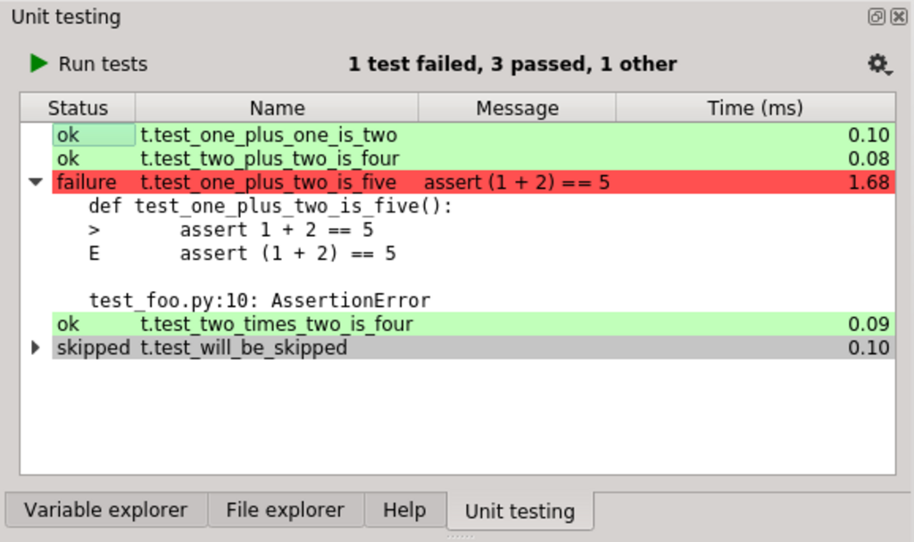

Overview

Spyder is a free and open source scientific environment written in Python, for Python, and designed by and for scientists, engineers and data analysts. It features a unique combination of the advanced editing, analysis, debugging, and profiling functionality of a comprehensive development tool with the data exploration, interactive execution, deep inspection, and beautiful visualization capabilities of a scientific package.
.svg)
Watch video
Components

Editor
Work efficiently in a multi-language editor with a function/class browser, code analysis tools, automatic code completion, horizontal/vertical splitting, and go-to-definition.

Ipython Console
Harness the power of as many IPython consoles as you like in one GUI. Run code by line, cell or file; or work interactively with debugging, plots and magic commands.
Variable Explorer
Interact with and modify variables on the fly: plot a histogram or timeseries, edit a dateframe or Numpy array, sort a collection, dig into nested objects, and more!

Plots
Browse, zoom, copy and save the figures and images you create.
Debugger
Trace each step of your code's execution interactively.
Help
Instantly view any object's docs, and render your own.
Plugins
Extend Spyder's functionality with these awesome plugins!
Spyder Notebook
Spyder Terminal

Spyder Unittest
Downloads
Ready to give Spyder a try? Let's get started!
Want to join the community of scientists, engineers and analysts all around the world using Spyder? Click the
button below to download the suggested installer for your platform; we offer standalone installers on Windows
and macOS. For Linux, we recommend the cross-platform Anaconda distribution, which includes Spyder and many
other useful packages for scientific Python. You can also try out Spyder right in your web browser by
launching it on Binder.
For a detailed guide on the many different methods of obtaining Spyder, please refer to our full installation
instructions, and check out our release page for links to all our installers. These approaches are generally
intended for experienced users and those with specific needs, so we recommend sticking with the recommended
installer unless you have a specific reason to go with another. Happy Spydering!
macOS Big Sur users: Full support for macOS 11 Big Sur will be included in Spyder 4.2.1, scheduled for release
on December 18, 2020. However, see our FAQ question on Big Sur for how to get it working right now
Donate
Help us make Spyder even better for everyone!

Sponsors
Spyder is funded thanks to the generous support of
and the donations we have received from our users around the world through Open Collective:
Conect with us on : Github | Twitter | Facebook | Google Groups | Instagram |
© 2021 Spyder Website Contributors
|
Licensed
MIT and others
Features by icon
Freepic from flaticon.com
Template
Designed By
FreeHtml5.co.in
Hugo Port
by
Steve Lane
|
Lektor port
by
Dalthviz
Rewrite by
C.A.M Gerlach
|
Maintained by
Spyder IDE